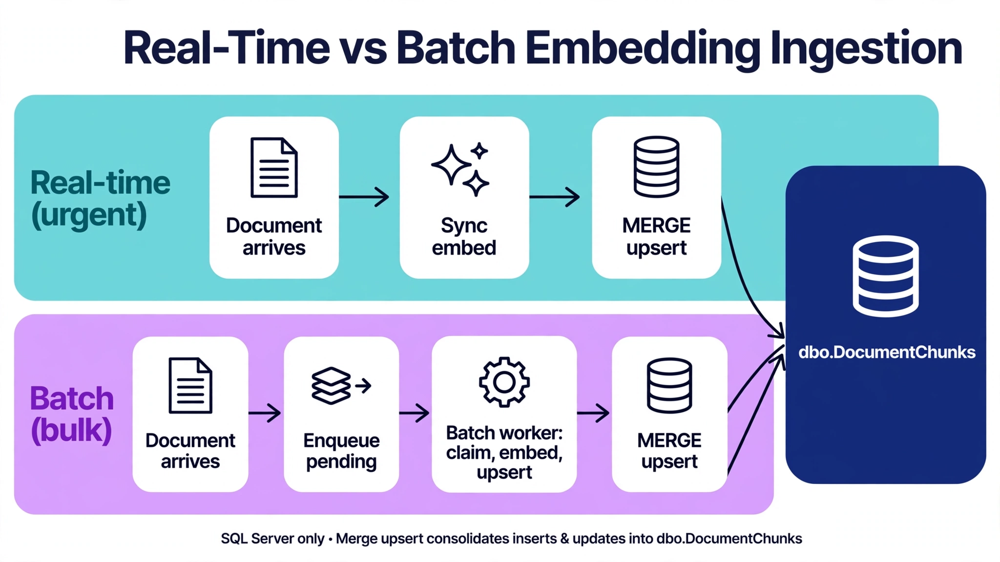

Chapter 29: Real-Time vs Batch Embedding Generation
29.1 Understanding the Embedding Generation Pipeline
Every vector in your database was produced by an embedding call — an API request or a GPU inference — and that production step has its own architecture decisions: when embeddings are generated (at write time or in bulk later), how failures are retried, and how the pipeline scales with document volume. Get the timing wrong and you either pay synchronous latency on every write or serve stale search results for hours.
The two pure strategies are real-time (embed synchronously as documents arrive) and batch (queue documents, embed in bulk on a schedule). Most production systems end up hybrid. This chapter gives you the patterns for each, implemented against SQL Server, and a framework for choosing.
---
29.2 Real-Time Embedding Generation
The following example shows a FastAPI endpoint that ingests documents and generates embeddings synchronously using the OpenAI API and SQL Server native VECTOR for storage:
# Python — FastAPI synchronous embedding ingestion into SQL Server
import hashlib, openai, pyodbc
from fastapi import FastAPI, HTTPException
app = FastAPI()
openai_client = openai.OpenAI()
conn = pyodbc.connect("DRIVER={ODBC Driver 18 for SQL Server};"
"SERVER=localhost;DATABASE=ragdb;Trusted_Connection=yes;"
"Encrypt=yes;TrustServerCertificate=yes;MARS_Connection=yes")
@app.post("/documents")
def ingest_document(doc_id: str, text: str, tenant_id: int):
# Step 1: embed synchronously (caller waits for the API round-trip)
try:
emb = openai_client.embeddings.create(
input=[text], model="text-embedding-3-small").data[0].embedding
except Exception as e:
raise HTTPException(502, f"Embedding provider failed: {e}")
vec = "[" + ",".join(str(v) for v in emb) + "]"
content_hash = hashlib.sha256(text.encode()).hexdigest()
# Step 2: write to SQL Server
cur = conn.cursor()
cur.execute("""MERGE dbo.DocumentChunks AS t
USING (SELECT ? AS DocId, ? AS ChunkText,
CAST(? AS VECTOR(1536)) AS Embedding,
? AS ContentHash, ? AS TenantId) AS s
ON t.DocId = s.DocId AND t.ChunkIndex = 0
WHEN MATCHED AND t.ContentHash <> s.ContentHash THEN
UPDATE SET ChunkText = s.ChunkText, Embedding = s.Embedding,
ContentHash = s.ContentHash,
UpdatedAt = SYSUTCDATETIME()
WHEN NOT MATCHED THEN
INSERT (DocId, ChunkIndex, ChunkText, Embedding,
ModelId, TenantId, ContentHash)
VALUES (s.DocId, 0, s.ChunkText, s.Embedding,
'text-embedding-3-small', s.TenantId, s.ContentHash);""",
(doc_id, text, vec, content_hash, tenant_id))
conn.commit()
return {"doc_id": doc_id, "status": "indexed"}
Real-time is the right choice when freshness is the product: a support agent that must search a ticket the moment it is filed, a product catalog where new SKUs must be searchable immediately. The costs are synchronous latency (every write waits for the embedding API), coupled failure modes (embedding provider outage blocks your writes), and per-request API pricing with no batching discount.
Harden the failure mode: never let an embedding failure lose the document. Write the raw text first with a NULL embedding and an EmbeddingStatus = 'pending' flag, then fill it in — synchronously in the fast path, or via the batch worker in Section 29.3 when the provider is down. The document is never lost; only its searchability is delayed.
---
29.3 Batch Embedding Generation
Batch generation decouples document arrival from embedding: writes land instantly with EmbeddingStatus = 'pending', and a worker fleet drains the queue in bulk. You get API batching discounts, retry isolation (provider outage delays searchability, not writes), and controllable load — at the cost of freshness measured in minutes instead of milliseconds.
-- SQL Server: embedding work queue (status-driven, no SKIP LOCKED needed)
CREATE TABLE dbo.EmbeddingQueue (
QueueId BIGINT IDENTITY(1,1) NOT NULL
CONSTRAINT PK_EmbeddingQueue PRIMARY KEY,
DocId NVARCHAR(100) NOT NULL,
ChunkIndex INT NOT NULL,
ChunkText NVARCHAR(MAX) NOT NULL,
TenantId INT NOT NULL,
Status NVARCHAR(20) NOT NULL
CONSTRAINT DF_EmbeddingQueue_Status DEFAULT ('pending'),
Attempts INT NOT NULL CONSTRAINT DF_EmbeddingQueue_Attempts DEFAULT (0),
LastError NVARCHAR(1000) NULL,
EnqueuedAt DATETIME2(0) NOT NULL
CONSTRAINT DF_EmbeddingQueue_Enq DEFAULT SYSUTCDATETIME(),
CONSTRAINT UQ_EmbeddingQueue_Doc_Chunk UNIQUE (DocId, ChunkIndex)
);
CREATE INDEX IX_EmbeddingQueue_Status_Id
ON dbo.EmbeddingQueue (Status, QueueId);
-- Workers claim batches with an atomic status transition:
-- UPDATE TOP (100) dbo.EmbeddingQueue
-- SET Status = 'processing', Attempts = Attempts + 1
-- OUTPUT inserted.QueueId, inserted.DocId, inserted.ChunkText
-- WHERE Status = 'pending';
-- Dead-letter after N attempts: Status = 'failed' for manual review.
The UPDATE TOP ... OUTPUT claim pattern is SQL Server's answer to the queue-consumer problem: each worker atomically claims its batch, processes it, and writes results back. Multiple workers run in parallel without coordination — the status transition is the lock, and a crashed worker's 'processing' rows are reclaimed by a sweeper job after a timeout.
# Python — batch embedding worker: claim, embed in bulk, write back
import time, openai, pyodbc
openai_client = openai.OpenAI()
conn = pyodbc.connect("DRIVER={ODBC Driver 18 for SQL Server};"
"SERVER=localhost;DATABASE=ragdb;Trusted_Connection=yes;"
"Encrypt=yes;TrustServerCertificate=yes")
BATCH = 100
MAX_ATTEMPTS = 5
def claim_batch():
cur = conn.cursor()
rows = cur.execute("""UPDATE TOP (%d) dbo.EmbeddingQueue
SET Status = 'processing',
Attempts = Attempts + 1
OUTPUT inserted.QueueId, inserted.DocId,
inserted.ChunkIndex, inserted.ChunkText,
inserted.TenantId, inserted.Attempts
WHERE Status = 'pending'""" % BATCH).fetchall()
conn.commit()
return rows
def run_worker():
while True:
batch = claim_batch()
if not batch:
time.sleep(10); continue
try:
resp = openai_client.embeddings.create(
input=[r[3] for r in batch], model="text-embedding-3-small")
cur = conn.cursor()
for row, e in zip(batch, resp.data):
qid, doc_id, cidx, text, tenant, attempts = row
vec = "[" + ",".join(str(v) for v in e.embedding) + "]"
cur.execute("""MERGE dbo.DocumentChunks AS t
USING (SELECT ? AS DocId, ? AS ChunkIndex, ? AS ChunkText,
CAST(? AS VECTOR(1536)) AS Embedding,
? AS TenantId) AS s
ON t.DocId = s.DocId AND t.ChunkIndex = s.ChunkIndex
WHEN MATCHED THEN UPDATE SET ChunkText = s.ChunkText,
Embedding = s.Embedding, UpdatedAt = SYSUTCDATETIME()
WHEN NOT MATCHED THEN INSERT
(DocId, ChunkIndex, ChunkText, Embedding,
ModelId, TenantId, ContentHash)
VALUES (s.DocId, s.ChunkIndex, s.ChunkText, s.Embedding,
'text-embedding-3-small', s.TenantId, '');""",
(doc_id, cidx, text, vec, tenant))
cur.execute("DELETE FROM dbo.EmbeddingQueue WHERE QueueId = ?",
(qid,))
conn.commit()
except Exception as ex:
conn.rollback()
cur = conn.cursor() # requeue or dead-letter per row
for row in batch:
status = ('failed' if row[5] >= MAX_ATTEMPTS else 'pending')
cur.execute("""UPDATE dbo.EmbeddingQueue
SET Status = ?, LastError = ?
WHERE QueueId = ?""",
(status, str(ex)[:1000], row[0]))
conn.commit()
time.sleep(30) # back off on provider errors
---
29.4 Hybrid Architectures: Combining Both Strategies
Production reality is hybrid: a fast path for documents that must be searchable now, and a batch path for everything else. Route by document priority — user-uploaded content and tickets go synchronous; bulk imports, re-embeds, and backfills go through the queue. Both paths write through the same MERGE upsert, so ordering conflicts resolve to "last writer wins" and the content hash prevents redundant API calls when both paths touch the same document.

The two colored lanes are the two ingestion speeds of a production embedding pipeline. The teal top lane is the real-time path: an urgent document arrives, gets embedded synchronously, and is upserted straight into dbo.DocumentChunks so it is searchable immediately. The purple bottom lane is the batch path: bulk documents are enqueued as pending, a batch worker claims them, embeds, and upserts on a schedule. Both lanes converge on the same MERGE upsert — the single choke point where last-writer-wins ordering and content-hash deduplication keep the table consistent no matter which path wrote a chunk.
---
29.5 Cost Optimization and Model Selection
MERGE means re-ingested unchanged documents cost nothing. For near-duplicate detection at scale, hash normalized text (lowercased, whitespace-collapsed).---
29.6 Monitoring and Observability
-- SQL Server: embedding pipeline health dashboard
-- Queue depth and oldest pending item (freshness SLA signal):
SELECT Status, COUNT(*) AS Items,
MIN(EnqueuedAt) AS OldestEnqueued,
AVG(Attempts) AS AvgAttempts
FROM dbo.EmbeddingQueue
GROUP BY Status;
-- Dead letters needing attention:
SELECT TOP (50) QueueId, DocId, Attempts, LastError, EnqueuedAt
FROM dbo.EmbeddingQueue
WHERE Status = 'failed'
ORDER BY EnqueuedAt DESC;
-- Ingest freshness: documents updated but not yet searchable
-- (chunks missing or stale vs source watermark) — join against
-- dbo.IndexWatermarks from Chapter 28 for the end-to-end lag number.
Alert on three signals: queue depth growing faster than drain rate (workers under-provisioned or provider throttling), dead-letter growth (systematic failure, not transient), and oldest-pending age exceeding the freshness SLA. The end-to-end lag number — source change to searchable vector — is the pipeline's headline SLI; trend it, not just the queue depth.
---
29.7 Re-Embedding and Index Migration
A model change re-embeds the entire corpus — the batch pipeline is how you execute it without an outage. Enqueue every document with a migration tag, let the workers drain at a throttled rate, and write into the side-by-side Embedding_v2 column (Chapter 23) rather than overwriting the live vectors. Retrieval keeps serving from the old column until the eval-gated cutover flips the query path.
-- SQL Server: enqueue a full-corpus re-embed for model migration
INSERT INTO dbo.EmbeddingQueue (DocId, ChunkIndex, ChunkText, TenantId, Status)
SELECT DocId, ChunkIndex, ChunkText, TenantId, 'pending'
FROM dbo.DocumentChunks;
-- Workers pick these up with the NEW model id; the MERGE targets
-- Embedding_v2 (see Chapter 23). Throttle by limiting worker count
-- during business hours — the old vectors keep serving meanwhile.
---
29.8 Choosing Your Strategy: A Practical Framework
UPDATE TOP ... OUTPUT claiming. Scales horizontally, isolates provider failures.MERGE upsert underneath.---
Key Takeaways
UPDATE TOP ... OUTPUT — atomic, parallel-safe, no external queue required. Multiple workers scale horizontally with zero coordination.MERGE upsert prevents double-billing the embedding API and makes every path safely re-runnable.QueryOptimizer — Self-Hosted SQL Performance Workbench
EXPLAIN visualizer · Index advisor · Slow query dashboard · SQL Server
Test yourself on this chapter
5 questions · instant scoring · explanations included